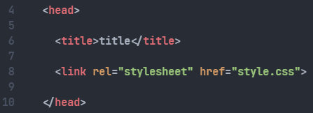
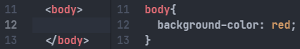
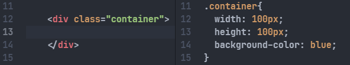
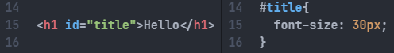
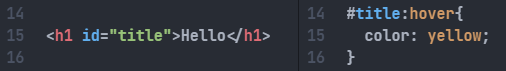
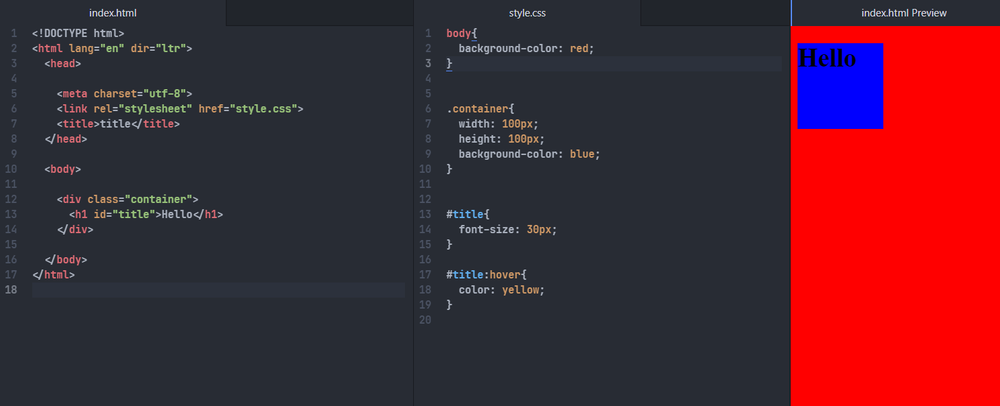

CSS (Cascading Style Sheets)
This language is used to define the formatting of a web page
The tag <link> is used to connect an HTML page with css formatting stylesheet

CSS language is divided into 4 more important selectors:
- Type Selectors
- Class Selectors
- ID Selectors
- Pseudo-Classes Selectors

TYPE SELECTORS:
Type selectors are used for change the formatting of determined type fo tags
CLASS SELECTORS:
By adding a class-name in one or more HTML tags we change the formatting of each element which have the same class


ID SELECTORS:
By addidng an ID-name in one HTML tag we change the formatting of the specific element
PSEUDO-CLASSES SELECTORS:
This selectors are used to identify HTML elements'proprieties

